Az evolúció a földi élet sokféleségének alapvető mozgatórugója: az a folyamat, amely során az élőlények populációinak öröklődő tulajdonságai generációról generációra megváltoznak. Nem egy egyéni életút során bekövetkező átalakulásról van szó, hanem évezredek vagy évmilliók alatt végbemenő folyamatos alkalmazkodásról.
Mutáció: A DNS másolása során véletlenszerű hibák, genetikai változások keletkeznek. Ez hozza létre a populációkon belüli új tulajdonságokat és a genetikai változatosságot.
Természetes szelekció: Charles Darwin ismerte fel a leghíresebb elvét: azok az egyedek, amelyek tulajdonságaik révén jobban alkalmazkodnak a környezetükhöz, nagyobb eséllyel élik túl a mindennapokat és hagynak maguk után utódokat. A hasznos bélyegek így elterjednek a populációban.
Genetikai sodródás (drift): A véletlen események (például természeti katasztrófák) hatása, amelyek megváltoztathatják bizonyos tulajdonságok arányát egy csoportban, függetlenül azok hasznosságától.
Migráció (genetikai áramlás): Amikor egy faj egyedei más populációkba vándorolnak át, új genetikai információt hozva magukkal.
Fosszíliák: A kőzetrétegekben megőrződött maradványok világos átmenetet mutatnak a régebbi, egyszerűbb élőlényektől a mai, komplexebb formák felé.
Hasonló testfelépítés (Homológ szervek): Az ember kara, a denevér szárnya és a bálna uszonya teljesen eltérő funkciót tölt be, de a csontszerkezetük alapja azonos, ami közös ősre utal.
DNS-szekvenciák: A modern genetika kimutatta, hogy az élőlények rokon fajainak génállománya rendkívül nagy mértékben átfedi egymást (például az ember és a csimpánz DNS-e kb. 98%-ban azonos).
Az evolúció nem a „tökéletességre” törekszik, és nem egy előre eltervezett út. Csupán azt biztosítja, hogy az élőlények a folyamatosan változó környezeti feltételekhez – például klímaváltozáshoz vagy új betegségekhez – a lehető legjobban alkalmazkodjanak a fennmaradás érdekében.
Esemény: Az első egyszerű, egysejtű élőlények (prokarióták) megjelenése az ősóceánokban.
Kép leírása: Mikroszkopikus nézet egy világító, egyszerű sejtstruktúráról a sötét, ásványi anyagokban gazdag ősi tengerben.
Esemény: A ciánbaktériumok elkezdik a napfényt energiává alakítani, oxigént bocsátva ki, ami megváltoztatja a Föld légkörét.
Kép leírása: Kőbe zárt ősi sztromatolitok (baktériumtelepek) a sekély tengerparti vízben, ahogy apró oxigénbuborékok emelkednek ki belőlük.
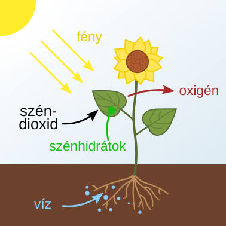
Esemény: Komplexebb, sejtmaggal és sejtszervecskékkel rendelkező sejtek jönnek létre az endoszimbiózis útján.
Kép leírása: Egy összetett sejt keresztmetszete, amelyben jól látható a sejtmag és a mitokondriumok.
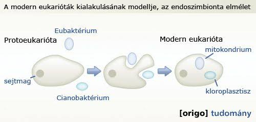
Esemény: A sejtek elkezdenek együttműködni és specializálódni, utat nyitva az összetettebb élőlények felé.
Kép leírása: Két dimenziós rajz vagy mikroszkópos kép egy korai többsejtű organizmusról, mint amilyenek az Ediacara-időszak puhatestű lényei.
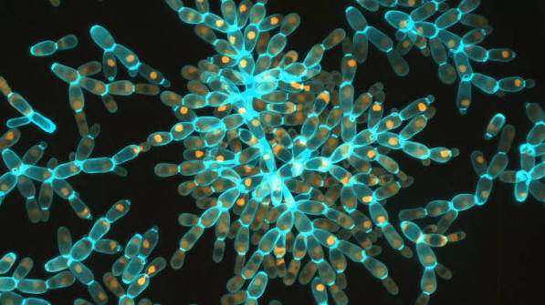
Esemény: Az életformák hihetetlen sokfélesége jelenik meg rövid idő alatt; kialakulnak a szilárd vázak és a páncélok.
Kép leírása: Egy nyüzsgő ősóceáni aljzat Trilobitákkal, Anomalocarisszal és különös, tüskés lényekkel.
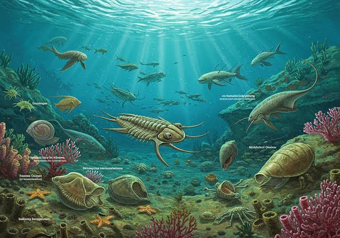
Esemény: Megjelennek a gerinchúrral rendelkező, primitív halak.
Kép leírása: Egy pikkelytelen, állkapocs nélküli őshal (pl. Haikouichthys) ábrázolása a vízinövények között.
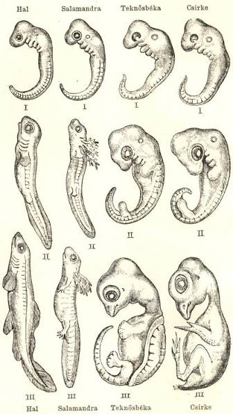
Esemény: Az első mohaszerű növények kilépnek a szárazföldre, átalakítva a kopár sziklákat.
Kép leírása: Zöldellő, mohával borított nedves sziklák a kopár, barna táj közepén.
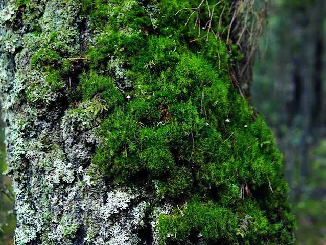
Esemény: A halakból kialakulnak az első négylábúak (tetrapodák), amelyek képesek a szárazföldön is mozogni.
Kép leírása: Egy Tiktaalik vagy Ichthyostega, amint a mocsaras partra mászik ki a vízből.

Esemény: A kemény héjú tojás révén az állatok teljesen függetlenednek a vízi környezettől a szaporodásban.
Kép leírása: Egy korai hüllő, amint egy pikkelyes héjú tojást őriz a száraz, harasztokkal teli erdőaljzatban.
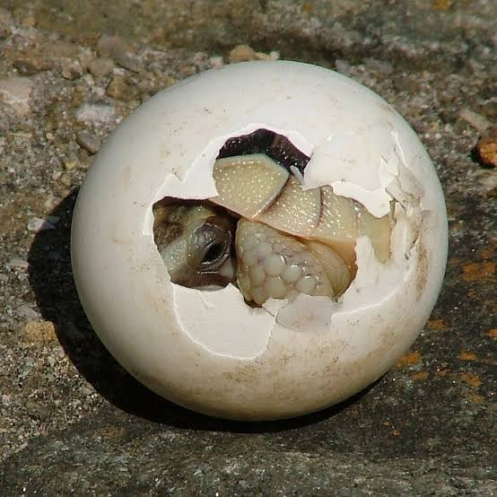
Esemény: A hüllők dominánssá válnak, hatalmas méretű és változatos fajaik népesítik be a bolygót.
Kép leírása: Egy T-Rex és egy Triceratops drámai találkozása egy buja, trópusi környezetben.
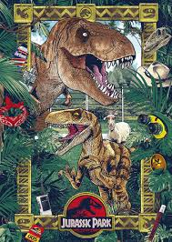
Esemény: Megjelennek az első apró, melegvérű, szőrös emlősök, amelyek éjszakai életmódot folytatnak.
Kép leírása: Egy kis egérszerű emlős (Morganucodon), amint a sötétben egy dinoszaurusz lába mellett rejtőzik.
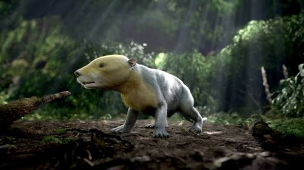
Esemény: A tollas dinoszauruszokból kifejlődnek az első madarak.
Kép leírása: Az Archaeopteryx egy faágon ülve, félig dinoszaurusz-, félig madárvonásokkal és tollas szárnyakkal.
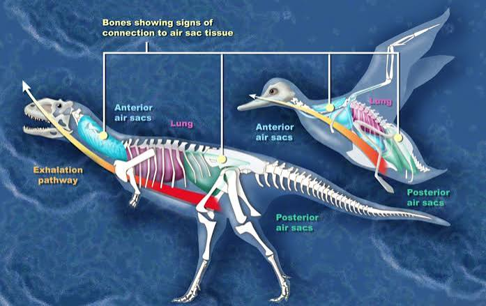
Esemény: Egy meteoritbecsapódás globális katasztrófát okoz, ami utat nyit az emlősök gyors elterjedésének.
Kép leírása: Hatalmas meteorit becsapódása a távolban, miközben a füst és a hamu elborítja az eget.

Esemény: Az ember és a csimpánz közös ősének vonala elválik; megjelennek az első felegyenesedve járó homininák.
Kép leírása: Egy Australopithecus pár, amint az afrikai szavannán sétál felegyenesedve.

Esemény: Kialakul a mai ember, az elme, a nyelv és a szimbolikus gondolkodás fejlődésével.
Kép leírása: Ősembercsoport a tűz körül egy barlangban, a falakra állatokat festve.
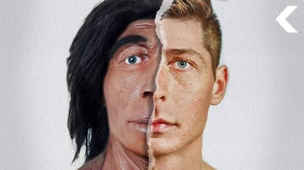